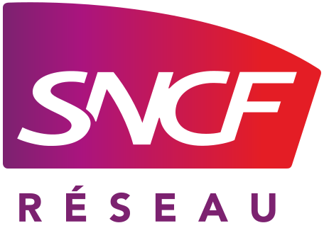
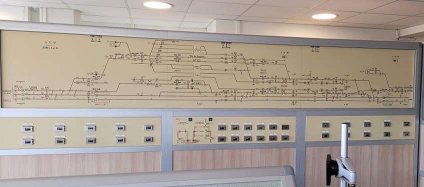

SNCF
Réseau
Stage en tant qu'agent d'études en signalisation ferroviaire au Pôle Ingénierie Études Signalisation de Bordeaux (PIES).

Gestionnaire du réseau ferré national français
Contexte du Stage
Mon stage s'est déroulé au Pôle Ingénierie Études Signalisation (PIES) de Bordeaux. L'étude que j'ai réalisé s'inscrit dans le projet AFSB (Aménagements Ferroviaires au Sud de Bordeaux) :
- Le projet : Augmenter le trafic en ajoutant une 3e voie et moderniser les équipements du poste 10 d'Hourcade.
- L'objectif : Remplacer la logique à relais par un automate pour le contrôle des voyants d'un tableau de contrôle.
- La technique : Utilisation du logiciel AutoCAD pour les modifications de plans techniques et paramétrage d'un automate SIROCCO (Système Informatique Responsable de l'Ordonnencement et du Calcul des Contrôles Optiques).
Missions Techniques
Plans Techniques
Étude, réalisation et modification de plans techniques sur AutoCAD : pose et dépose d'éléments de voie (ajout et suppression).
Traitement
Adaptation de schémas électriques et création d'équations pour paramétrer l'automate SIROCCO.
Automatisme
Paramétrage des entrées/sorties et fonctions dans le logiciel de l'automate SIROCCO.
Déroulement & Réalisations
Découverte des plans
Familiarisation avec les schémas de signalisation, prise de connaissance des symboles et de leurs fonctions dans le système ferroviaire réel.
Modifications sur AutoCAD
Réalisation de la suppression d'un morceau de voie et de l'ajout d'un passage à niveau.
Documents d'exécution
Mise à jour des sorties liées aux dispositifs supprimés ou rajoutés. Adaptation de schémas électriques illustrant les conditions qui décrivent le fonctionnement des voyants.
Paramétrage Logiciel
Création des équations nécessaires à l'automate SIROCCO pour gérer les voyants du tableau de contrôle en fonction de différentes conditions comme la position des trains.
